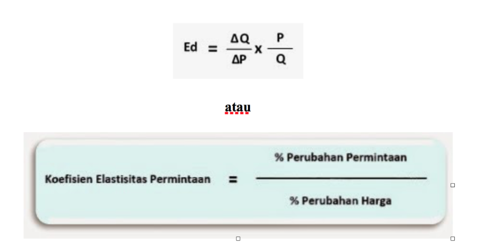
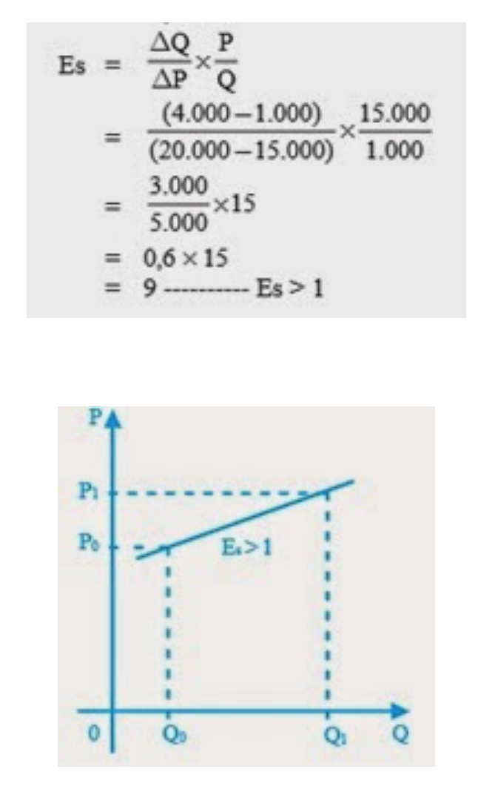

Harga Keseimbangan Pasar
Gambaran kekuatan permintaan dan penawaran dapat dilihat pada kurva permintaan kaos dan penawaran kaos.
Memahami konsep ekonomi dalam kaitannya dengan permintaan, penawaran, dan harga keseimbangan.
Permintaan adalah jumlah barang atau jasa yang ingin dan mampu dibeli oleh konsumen, pada berbagai tingkat harga, dan pada periode tertentu.
Ada beberapa hal yang menyebabkan kebutuhan manusia antara satu dengan yang lain berbeda-beda, di antaranya sebagian berikut :
Dalam hukum permintaan, dikatakan bahwa hukum yang berlaku dalam ilmu ekonomi tidaklah berlaku mutlak tetapi bersifat ceteris paribus. Faktor penyebab tidak berlakunya hukum permintaan yaitu:
Kurva permintaan adalah kurva yang menggambarkan sifat hubungan antara harga suatu barang tertentu dengan jumlah barang yang diminta pembeli. Dengan menggunakan skedul permintaan, besarnya permintaan barang dan jasa pada berbagai tingkat harga dapat diketahui dengan mudah.
Untuk lebih jelasnya, simaklah model skedul dan kurva permintaan berikut.
Penawaran adalah jumlah barang dan jasa yang tersedia dan dapat dijual oleh penjual.
Hukum penawaran menyatakan semakin tinggi harga suatu barang semakin banyak jumlah barang yang dibutuhkan, semakin rendah harga suatu barang semakin sedikit jumlah barang yang ditawarkan. Hukum penawaran juga bersifat ceteris paribus. Hal ini menunjukkan hubungan yang positif antara harga barang atau jasa dengan kuantitas yang ditawarkan.
Gambaran kekuatan permintaan dan penawaran dapat dilihat pada kurva permintaan kaos dan penawaran kaos.
Perubahan permintaan dan penawaran ini dapat memengaruhi keadaan keseimbangan. Ada empat kemungkinan yang menyebabkan perubahan ekuilibrium yaitu:
Keterangan (perubahan ekuilibrium akibat pergeseran kurva penawaran):
Keterangan (perubahan ekuilibrium akibat pergeseran kurva permintaan):
Elastisitas permintaan digunakan untuk mengukur besarnya kepekaan jumlah barang yang diminta akibat adanya perubahan harga barang itu sendiri. Tingkat elastisitas permintaan terhadap berbagai macam barang dan jasa akan berbeda-beda.
Hal ini dipengaruhi oleh beberapa faktor berikut ini:

Sebuah toko sepatu melakukan cuci gudang terhadap semua jenis sepatu, mulai dari sepatu anak-anak sampai sepatu dewasa. Harga sepatu anak semula Rp20.000,00 turun menjadi Rp15.000,00. Penurunan harga ini menyebabkan jumlah permintaan sepatu anak naik dari 1.000 menjadi 4.000
Sehingga koefisien elastisitasnya dapat dihitung sebagai berikut:
Harga jeruk lokal di suatu pasar tradisional naik dari Rp6.000,00 menjadi Rp7.000,00 per kilogram. Kenaikan harga ini menyebabkan permintaan jeruk lokal turun dari 700 kg menjadi 650 kg./p>
Sehingga koefisien elastisitasnya dapat dihitung sebagai berikut:
Harga sebuah i-POD turun dari Rp700.000,00 menjadi Rp630.000,00, sehingga permintaan i-POD naik yang semula 10.000 menjadi 11.000, sehingga koefisien elastisitasnya dapat dihitung sebagai berikut:
Harga kentang di pasar tradisional pada suatu daerah selalu berubah-ubah dalam setiap minggu, antara Rp4.000,00 sampai Rp6.000,00. Namun jumlah permintaannya selalu sama yakni 1 ton tiap minggu. Berikut ini perhitungan koefisien elastisitas dan grafiknya:
Harga sebuah i-POD turun dari Rp700.000,00 menjadi Rp630.000,00, sehingga permintaan i-POD naik yang semula 10.000 menjadi 11.000, sehingga koefisien elastisitasnya dapat dihitung sebagai berikut:
Perhitungan koefisien elastisitas dan grafiknya dapat kalian lihat di bawah ini.
Pengukuran elastisitas tidak hanya berlaku untuk permintaan saja, namun konsep elastisitas, juga dapat digunakan untuk menerangkan perubahan penawaran. Elastisitas penawaran mengukur responsif penawaran sebagai akibat perubahan harga.
Tingkat elastisitas penawaran dipengaruhi oleh dua faktor yang dianggap sangat penting di dalam menentukan elastisitas penawaran, yaitu:
Menghitung Koefisien Elastisitas Penawaran
Berikut ini kemungkinan hasil dari perhitungan koefisien elastisitas penawaran.
Harga sepatu anak naik yang semula Rp. 15.000,00 menjadi Rp. 20.000,00, sehingga penawaran naik dari 1.000 menjadi 4.000. Koefisien elastisitasnya adalah

Harga jeruk lokal di suatu pasar tradisional naik dari Rp. 6.000,00 menjadi Rp. 7.000,00 per kilogram, dan jumlah penawaran naik dari 6.500 kg menjadi 7.000 kg. Koefisien elastisitasnya adalah
Harga sepasang sandal mula-mula Rp. 20.000,00 naik menjadi Rp. 20.200,00, sehingga jumlah penawaran juga naik dari 10.000 menjadi 10.100. Koefisien elastisitasnya adalah